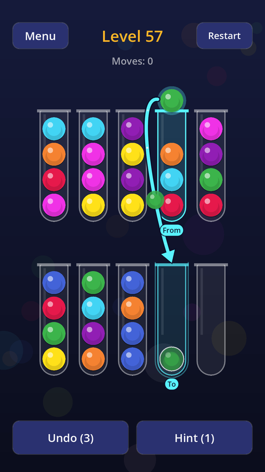
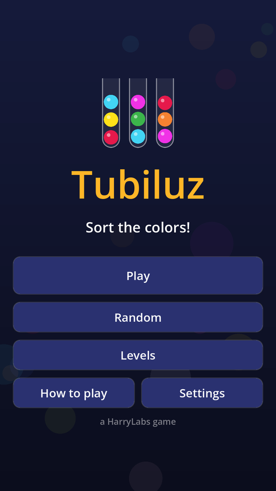
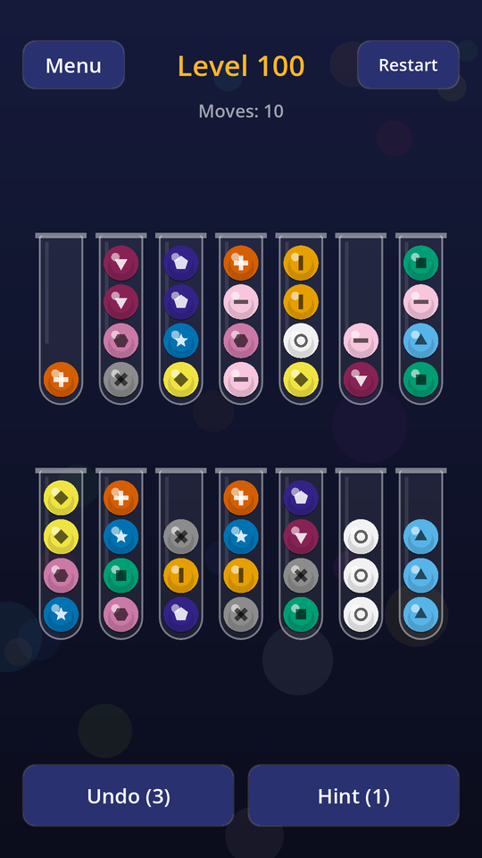
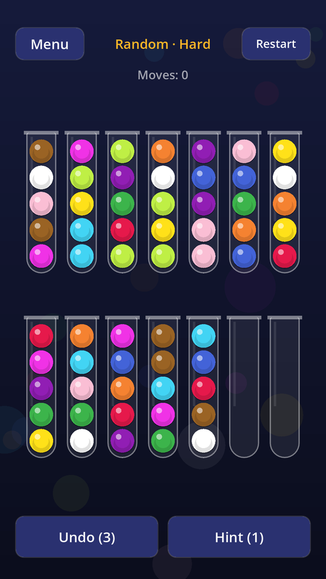

Tubiluz
A calm color sorting puzzle
Tap a tube, then another, to move the top balls. A ball can only go onto the same color or into an empty tube. Sort every tube to a single color.
- 200 levels, from 3 to 12 colors, with taller tubes and one-empty-tube challenge levels
- Endless random mode in Easy, Medium and Hard
- Hints that show one move of a shortest solution from where you are
- Interactive tutorial
- Colorblind mode with an adapted palette and symbols
- Relaxing music and sounds made for the game
- Español, English, Português, Deutsch
- No account needed – progress stays on your device
- Free, with ads
Privacy Policy · Terms of Use · Contact: harrylabs.games@gmail.com
Un puzzle tranquilo de ordenar colores
Toca un tubo y luego otro para mover las bolas de arriba. Una bola solo va sobre su mismo color o en un tubo vacío. Deja cada tubo de un solo color.
- 200 niveles, de 3 a 12 colores, con tubos más altos y niveles de reto con un solo tubo vacío
- Modo aleatorio sin fin: Fácil, Medio y Difícil
- Pistas que muestran un movimiento de una solución más corta desde donde estás
- Tutorial interactivo
- Modo daltónico con paleta adaptada y símbolos
- Música y sonidos relajantes hechos para el juego
- Español, English, Português, Deutsch
- Sin cuentas: el progreso queda en tu dispositivo
- Gratis, con anuncios
Política de privacidad · Términos de uso · Contacto: harrylabs.games@gmail.com
Um quebra-cabeça tranquilo de organizar cores
Toque em um tubo e depois em outro para mover as bolas de cima. Uma bola só vai sobre a mesma cor ou em um tubo vazio. Deixe cada tubo com uma só cor.
- 200 níveis, de 3 a 12 cores, com tubos mais altos e níveis de desafio com um só tubo vazio
- Modo aleatório sem fim: Fácil, Médio e Difícil
- Dicas que mostram um movimento de uma solução mais curta a partir de onde você está
- Tutorial interativo
- Modo daltônico com paleta adaptada e símbolos
- Música e sons relaxantes feitos para o jogo
- Español, English, Português, Deutsch
- Sem conta: o progresso fica no seu dispositivo
- Grátis, com anúncios
Política de Privacidade · Termos de Uso · Contato: harrylabs.games@gmail.com
Ein entspanntes Farbsortier-Puzzle
Tippe auf ein Röhrchen und dann auf ein anderes, um die oberen Kugeln zu bewegen. Eine Kugel passt nur auf die gleiche Farbe oder in ein leeres Röhrchen. Sortiere jedes Röhrchen auf eine Farbe.
- 200 Level mit 3 bis 12 Farben, höheren Röhrchen und Herausforderungs-Leveln mit nur einem leeren Röhrchen
- Endloser Zufallsmodus: Leicht, Mittel und Schwer
- Tipps zeigen einen Zug einer kürzesten Lösung ab deiner Stellung
- Interaktives Tutorial
- Farbenblind-Modus mit angepasster Palette und Symbolen
- Entspannende Musik und Sounds, eigens für das Spiel
- Español, English, Português, Deutsch
- Kein Konto nötig – der Fortschritt bleibt auf deinem Gerät
- Kostenlos, mit Werbung
Datenschutzerklärung · Nutzungsbedingungen · Kontakt: harrylabs.games@gmail.com




Android · com.harrylabs.tubiluz · v0.3.2